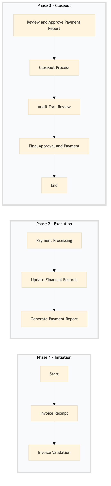

| Role | Steps |
|---|---|
| Accounts Payable Clerk | 1.1 1.2 2.1 2.2 3.1 3.3 |
| Accounts Payable Supervisor | 2.2 3.2 |
| Internal Auditor | 4.1 |
| Finance Manager | 4.2 |
| Step | Name | Role | System | Input | Output | KPI | Dec? | Exc? | Pain Point / Risk |
|---|---|---|---|---|---|---|---|---|---|
| 1.1 | Invoice Receipt | Accounts Payable Clerk | Oracle OPERA Cloud | Vendor invoice or automatic system-generated invoice | Recorded invoice in Oracle OPERA Cloud | Less than 10 minutes per invoice | N | Y | Handling discrepancies between received invoices and purchase orders. |
| 1.2 | Invoice Validation | Accounts Payable Clerk | Oracle OPERA Cloud | Recorded invoice in Oracle OPERA Cloud | Validated invoice with approval status | Less than 5 minutes per invoice | Y | N | Ensuring all required fields are correctly filled. |
| 2.1 | Payment Processing | Accounts Payable Clerk | Oracle OPERA Cloud, SAP S/4HANA | Validated invoice with approval status | Processed payment to vendor | Less than 30 minutes per payment | N | Y | Integrating with multiple banking systems for payment processing. |
| 2.2 | Update Financial Records | Accounts Payable Clerk | Oracle OPERA Cloud, SAP S/4HANA | Processed payment to vendor | Updated financial records in Oracle OPERA Cloud and SAP S/4HANA | Less than 10 minutes per record update | N | Y | Synchronizing data across multiple systems. |
| 3.1 | Generate Payment Report | Accounts Payable Supervisor | Oracle OPERA Cloud, Microsoft Power BI | Updated financial records in Oracle OPERA Cloud and SAP S/4HANA | Payment report for review | Less than 1 hour per report generation | N | Y | Generating accurate reports from complex data. |
| 3.2 | Review and Approve Payment Report | Accounts Payable Supervisor | Microsoft Power BI | Payment report for review | Approved payment report | Less than 1 hour per review | Y | N | Ensuring compliance with financial policies. |
| 3.3 | Closeout Process | Accounts Payable Clerk | Oracle OPERA Cloud, SAP S/4HANA | Approved payment report | Closed accounts payable cycle | Less than 1 hour per closeout | N | Y | Handling late payments and reconciling discrepancies. |
| 4.1 | Audit Trail Review | Internal Auditor | Oracle OPERA Cloud, SAP S/4HANA | Closed accounts payable cycle | Audit report | Less than 2 hours per audit | Y | N | Ensuring all transactions are accurately recorded. |
| 4.2 | Final Approval and Payment | Finance Manager | Oracle OPERA Cloud, SAP S/4HANA | Audit report | Final approval and payment to vendor | Less than 1 hour per approval | Y | N | Making final decisions based on audit findings. |
The Accounts Payable Processing (FN-AC-01) is a critical financial process at a Marriott full-service hotel. It ensures timely and accurate payment of invoices to vendors while maintaining compliance with internal controls.